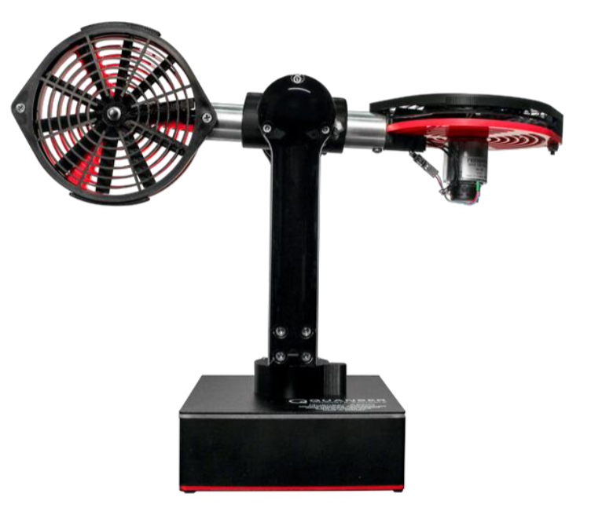
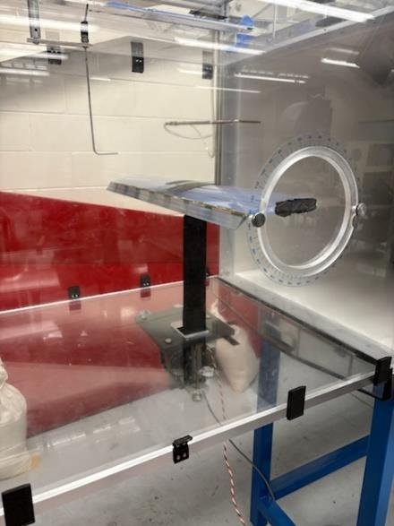

Propulsion & Turbomachinery
Flagship Project
High-Bypass Turbofan Engine Senior Design
11:1
Bypass Ratio
196 kN
Takeoff Thrust
9 stages
vs 13–14 (GE90)
55:1
Overall Pressure Ratio
- Led end-to-end design of a 74,770 lbf high-bypass separate-exhaust turbofan (Atlas-85X)
- Performed cycle analysis and turbomachinery sizing across takeoff, cruise, and loiter conditions
- Designed combustor geometry and evaluated component efficiencies using AEDsys and MATLAB
- Produced full CAD model in Onshape and validated performance against Boeing 777-class mission requirements

Flight Dynamics & Controls
DC-8 PID Controller Design
- Designed PID controllers for DC-8 longitudinal and lateral-directional dynamics from linearized state-space models
- Held AOA overshoot under 4% and verified zero steady-state error analytically via the Final Value Theorem
- Validated all controllers in MATLAB with step response simulations confirming stability margins and transient specs

Quanser Aero PID Control Design
- Tuned PID pitch controller on physical Quanser Aero hardware via QUARC real-time control
- Achieved 4.12% overshoot and 1.18s peak time with gains kₚ = 8, kₑ = 3.1, kᵢ = 5
- Identified second-order plant model (ζ = 0.0452, ωₙ = 2.18 rad/s) from experimental step response
- Improved phase margin from 3.68° to 87.5°, confirmed via Bode analysis in MATLAB

Aircraft Stability & Control Simulation
- Built a closed-loop 6-DOF flight simulation in MATLAB/Simulink from computed stability and control derivatives
- Validated pitch, roll, and yaw mode eigenvalues against prescribed damping and frequency specifications
- Exported maneuver trajectories to FlightGear for real-time 3D visualization of simulated flight

Experimental Aerodynamics
Wind Tunnel Drag Study: Flap Deflection
- Performed a wake survey on a NACA 4412 wing at five flap deflection angles in a subsonic wind tunnel
- Extracted drag coefficients from downstream velocity deficit profiles via momentum integral in MATLAB
- Compared measured Cᴰ values against theoretical predictions to validate wake survey methodology

Structural Analysis
Aircraft Wing Structural Analysis
- Modeled full wing assembly in Fusion 360 — spars, ribs, stringers, and skin panels
- Transferred geometry to FEMAP, applied aerodynamic loading, and solved with NX Nastran
- Validated mesh quality with Jacobian > 0.6; confirmed 0.15 in peak tip displacement
- Identified front spar root as peak stress location, consistent with cantilever bending theory

Orbital Mechanics
TDRS-M Orbital Mechanics and Trajectory Design
- Simulated LEO-to-GEO transfer for TDRS-M via Hohmann transfer and phasing maneuver
- Computed delta-V budgets, transfer times, and propellant consumption via Tsiolkovsky equation
- Validated orbital parameters against NASA’s published mission profile
- Visualized full trajectory in a 3D ECI reference frame using MATLAB

Systems & Decision Tools
Database Application for Aircraft Fleet Selection
- Built a MATLAB App Designer GUI for querying and comparing aircraft by multiple performance parameters
- Integrated a live Excel backend — records update without modifying application code
- Generated dynamic bar charts and scatter plots based on the active filtered selection
- Reduced data retrieval time by ~25% compared to manual spreadsheet workflows